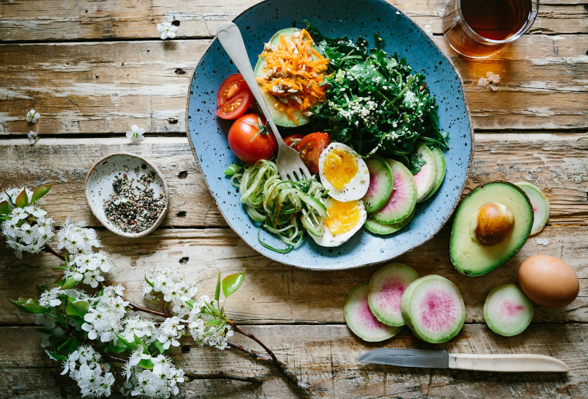
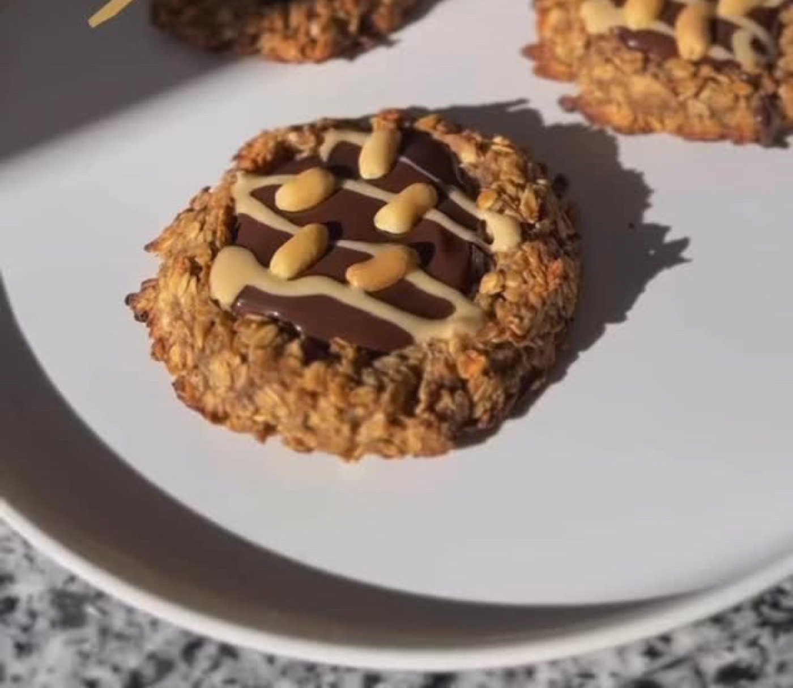
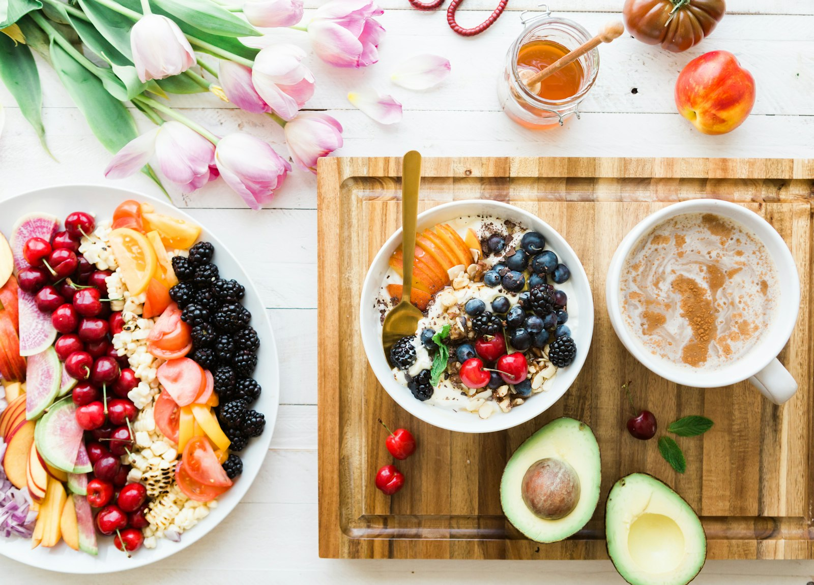
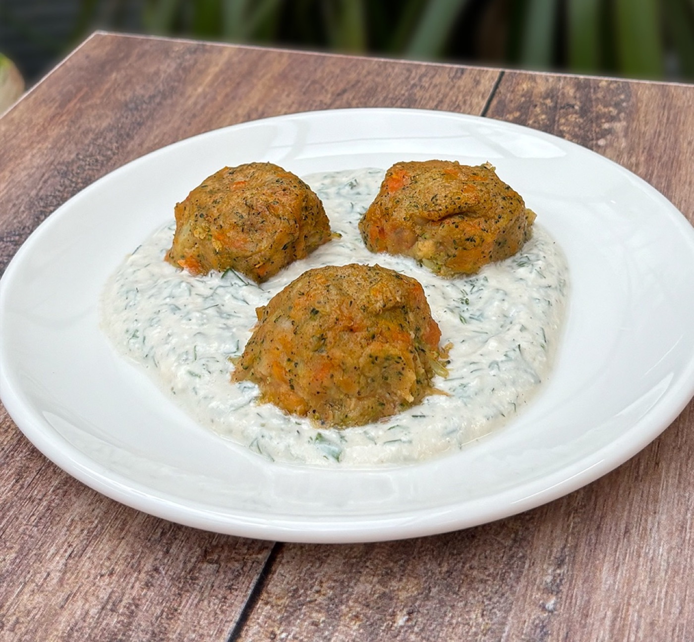
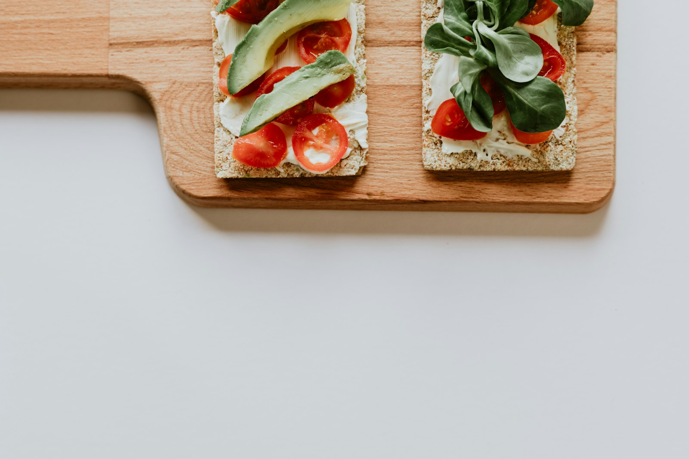
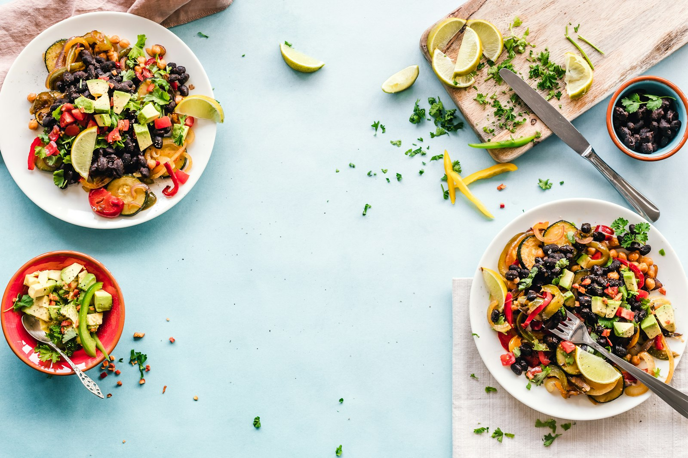
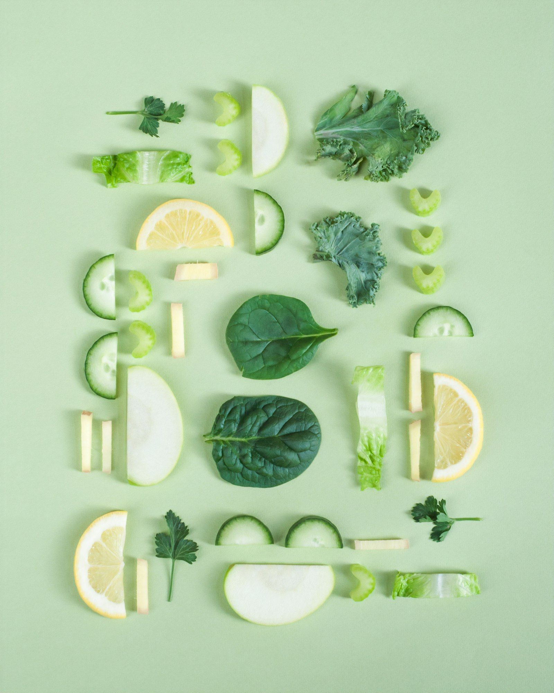
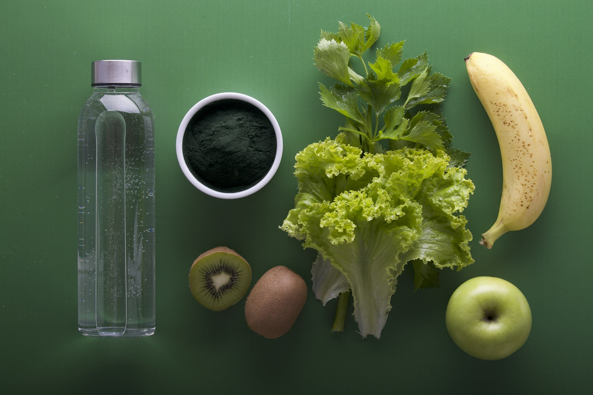
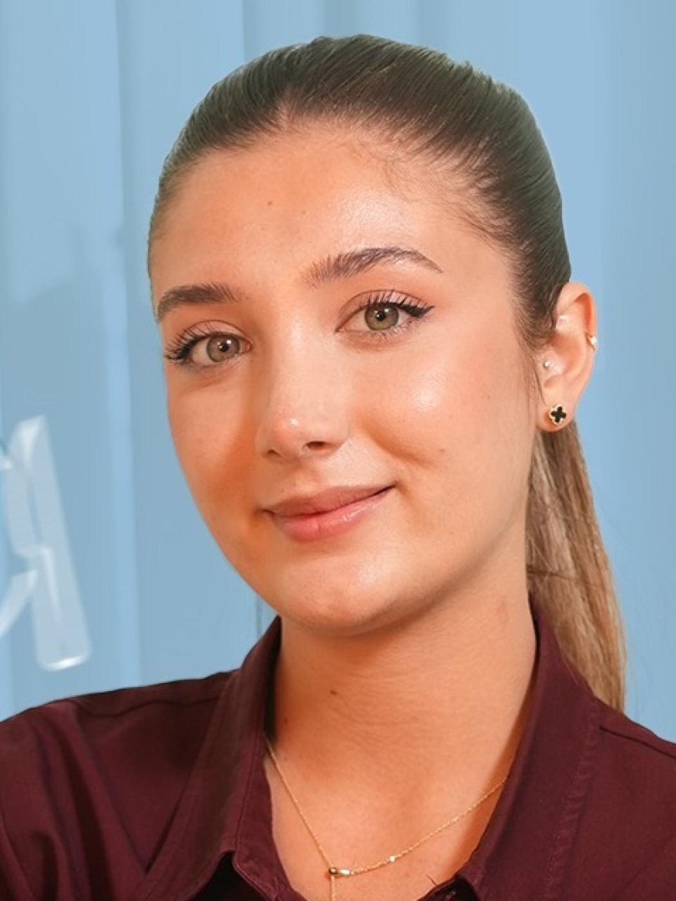
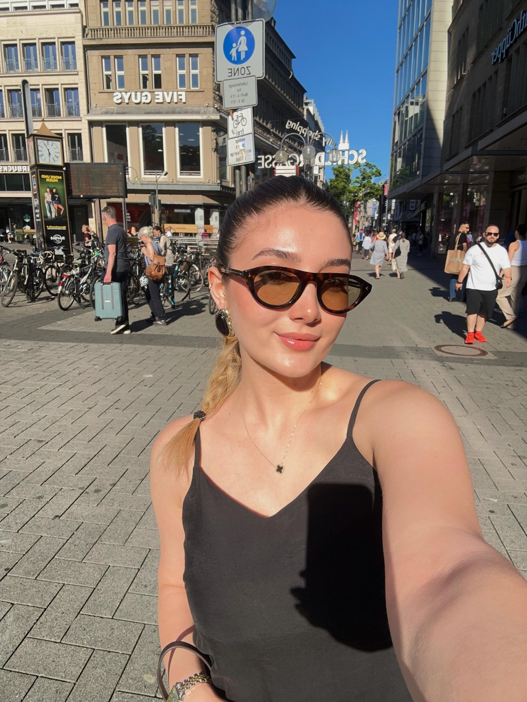

Fonksiyonel tıp
Bedeni bir bütün olarak ele alan, nedenlere odaklanan beslenme yaklaşımı.
Sağlıklı bir düzen birkaç gün kusursuz ilerlemekle değil, uzun vadede devam ettirebildiğin alışkanlıklarla oluşur. Koşuyolu Rezonans'ta yüz yüze ya da online, sana özel beslenme planı.





Mucize içecekler, şok diyetler ya da gelişigüzel takviyeler yerine; günlük yaşamına uyum sağlayan küçük ve sürdürülebilir adımlar.
Bedeni bir bütün olarak ele alan, nedenlere odaklanan beslenme yaklaşımı.
Takviyeler ve beslenme; ihtiyaca, kullanılan ilaçlara ve kan değerlerine göre planlanır.
Kısıtlayıcı listeler yerine, uzun vadede devam ettirebileceğin alışkanlıklar.
Ne yediğin kadar nasıl yediğin de önemli: açlık ve tokluk sinyallerini fark etmek.
Her gün aynı kahvaltıyı yapmak zorunda değilsin. Dengeli bir tabakta dört şeye özen göster; aşağıdan seç, tabağın dolsun.
Bazı takviyelerde kullanım zamanı emilim ve tolerans açısından fark yaratabilir. Tahminini seç, kart dönsün.
Her takviye için tek bir "doğru saat" yoktur; kişinin beslenmesi, kullandığı ilaçlar ve ihtiyaçları da göz önünde bulundurulmalıdır. Takviyeler ihtiyaca ve kan değerlerine göre planlanmalıdır.
Vücudun doğal arınma sürecinde zaten aktif olarak görev alan sistemler var. Organa dokun:
“Detoks bir ürün değil, bir yaşam biçimidir.”
Instagram'da paylaşılan tariflerden ikisi. Malzemeleri işaretle, hazır olduğunda pişir.
180 derecede kızarana kadar pişir. Kahve yanında ya da ara öğünde.
Sebzeleri haşla, süz; yağ, yulaf unu ve baharatla püre kıvamına getir. Top yap, 200°C'de 25–35 dk pişir.
Nerede olursan ol; görüşmeler, kişiye özel plan ve takip online.
Bilgi al
AltunizadeKoşuyolu Rezonans'ta, Altunizade / Üsküdar.
Randevu al
PlanlamaTakviyeleri gelişigüzel değil, ihtiyaca ve kan değerlerine göre planlamak.
Bilgi alSağlıklı beslenme, farkındalık ve nefesi bir araya getiren bir etkinlikte buluştuk.



Fonksiyonel tıp diyetisyeniyim. Hızlı sonuç vaat eden kısıtlayıcı diyetler yerine, yoğun ve yorgun dönemlerde bile hayatına uyum sağlayan, sürdürülebilir bir düzen kurmana eşlik ediyorum.
Bu sitedeki içerikler genel bilgilendirme amaçlıdır; tıbbi tanı veya tedavi önerisi yerine geçmez. Bireysel ihtiyaçlar kişiden kişiye değişir.